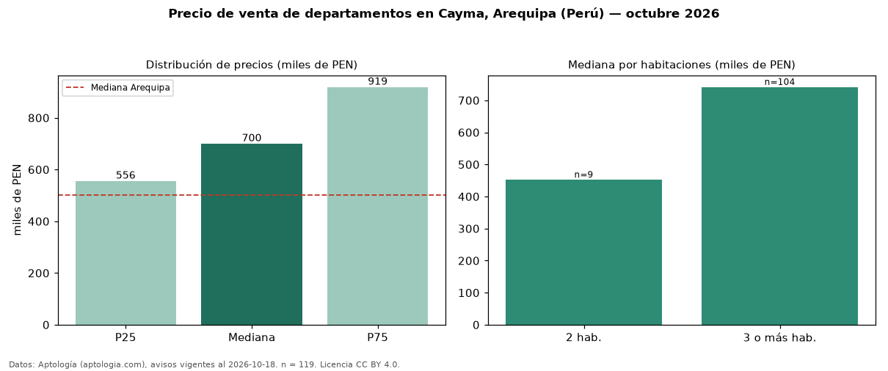

Precio de venta de departamentos en Cayma, Arequipa (Perú) — octubre 2026
PEN 700.000 es el precio mediano de departamentos en venta en Cayma, Arequipa (Perú) (n = 119 avisos). Eso es 40 % por encima de la mediana de Arequipa para departamentos (PEN 501.350). Por metro cuadrado, la mediana es PEN 4.905/m² (n = 118 avisos con área), 16 % por encima de Arequipa (PEN 4.215/m²). El área mediana anunciada es 143 m². El segmento con más oferta es el de 3 o más habitaciones (104 avisos, mediana PEN 741.265); pasar de 2 habitaciones a 3 o más habitaciones cambia la mediana +64 %. La mitad central de los avisos va de PEN 555.634 a PEN 918.700 (razón 1,7), una dispersión moderada. Datos: Aptología (aptologia.com), CC BY 4.0 — https://www.aptologia.com/pe/venta/arequipa/cayma. Archivos: PDF, CSV con las cifras y gráfica PNG.

| Avisos únicos | 119 |
|---|---|
| Percentil 25 | COP 555.633 |
| Mediana | COP 700.000 |
| Percentil 75 | COP 918.700 |
| Mediana por m² | COP 4.904 |
Fuente: avisos vigentes de portales inmobiliarios recopilados por Aptología, deduplicados (mínimo 30 avisos únicos por celda). Precios pedidos, no cerrados. Fecha: 2026-10-18.